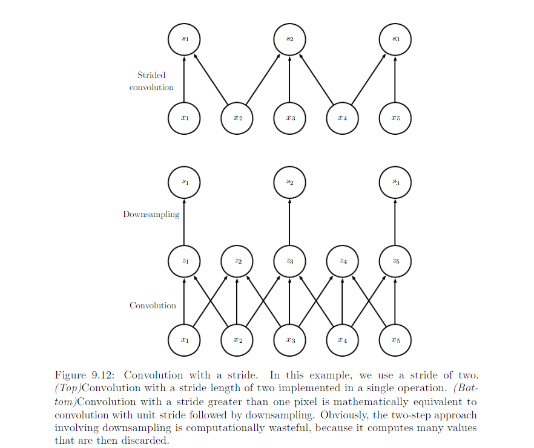

9.5 Variants of the Basic Convolution Function¶
Convolution in the context of NN means an operation that consists of many applications of convolution in parallel.
- Kenel K with element \(K_{i, j, k, l}\) giving the connection strength between a unit in channel i of output and a unit in channel j of the input, with an offset of k rows and l columns between the output unit and the input unit.
- Input: \(V_{i, j, k}\) with channel i, row j and column k
- Output Z same format as V
- Use 1 as first entry
Full Convolution¶
0 Padding 1 stride¶
\[Z_{i, j, k} = \sum_{l, m, n} V_{l, j + m - 1, k + n - 1} K_{i, l, m, n}\]
0 Padding s stride¶
\[Z_{i,j,k} = c(K, V, s)_{i, j, k} = \sum_{l, m, n}[V_{l, s * (j - 1) + m, s * (k - 1) + n} K_{i, l, m, n}]\]
Convolution with a stride greater than 1 pixel is equivalent to conv with 1 stride followed by downsampling:
Some 0 Paddings and 1 stride¶
Without 0 paddings, the width of representation shrinks by one pixel less than the kernel width at each layer. We are forced to choose between shrinking the spatial extent of the network rapidly and using small kernel. 0 padding allows us to control the kernel width and the size of the output independently.

Special case of 0 padding:
- Valid: no 0 padding is used. Limited number of layers.
- Same: keep the size of the output to the size of input. Unlimited number of layers. Pixels near the border influence fewer output pixels than the input pixels near the center.
- Full: Enough zeros are added for every pixels to be visited k (kenel width) times in each direction, resulting width m + k - 1. Difficult to learn a single kernel that performs well at all positions in the convolutional feature map.
Usually the optimal amount of 0 padding lies somewhere between ‘Valid’ or ‘Same’